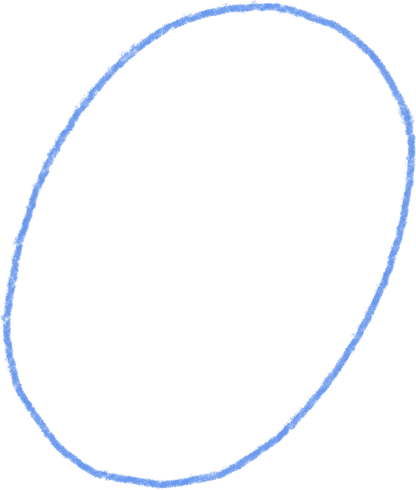
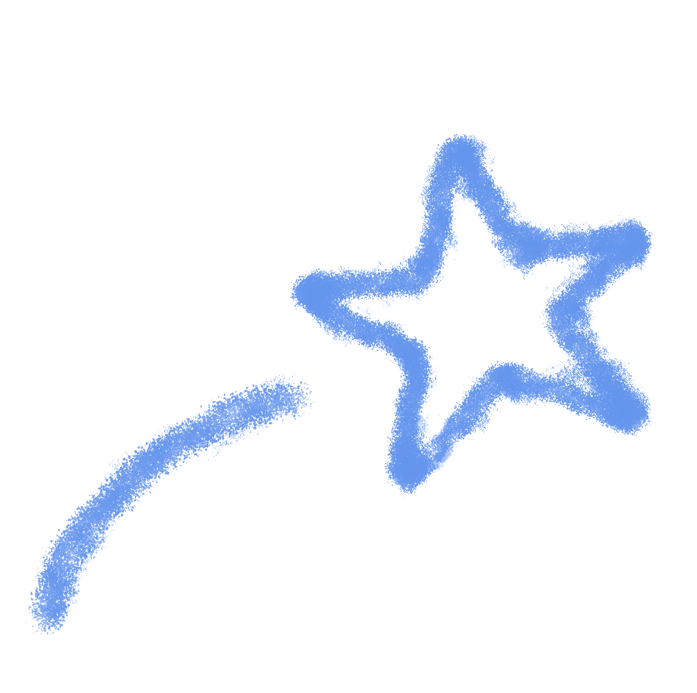
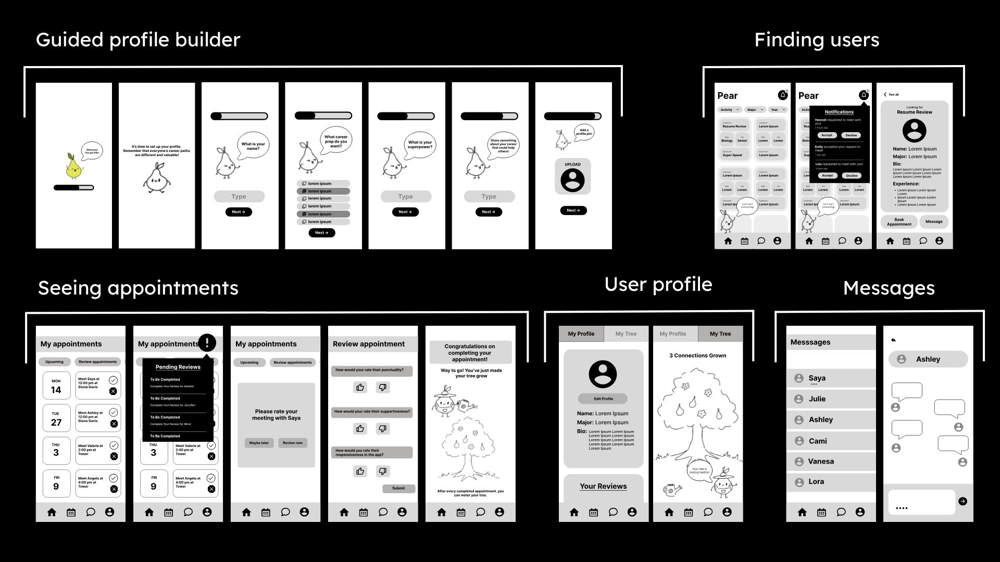
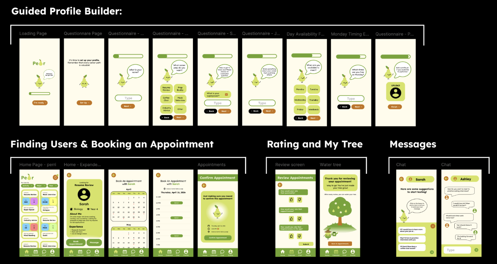
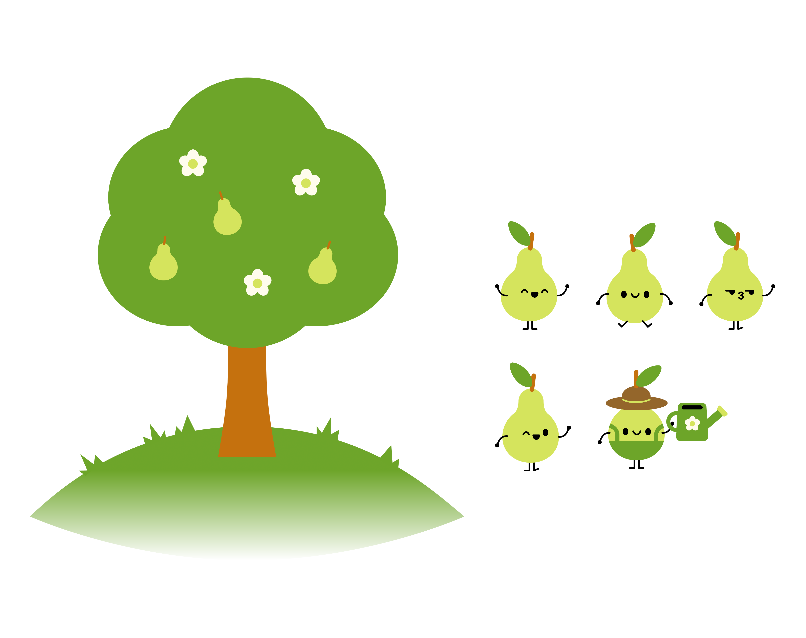

Hi,
I'm Ashley!




Figma app prototype
In my Human-Computer Interaction class, we were given a prompt at the beginning of the Spring 2026 semester: "Design a mobile app experience for Wellesley students to find and share services, without exchanging money." In my group, we identified a problem related to career prep resources available to students—we found that students generally felt a certain discomfort or intimidation from formal campus resources. As a result, we sought to build an app prototype that would provide a safe and welcoming space for students to offer and receive support.
I drew the preliminary designs and storyboard, and I designed the graphics, including the pear mascot, Perri. I also contributed to user testing, prototyping, and design, along with my team members.


